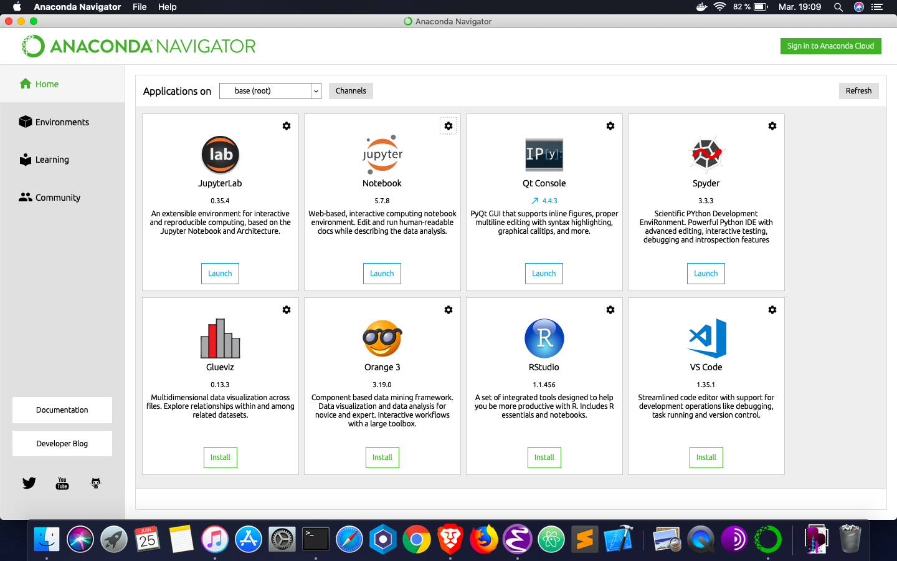
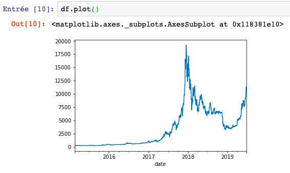
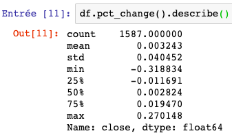
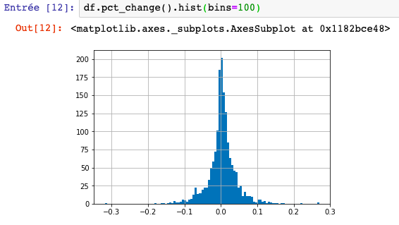

Analyse des données de crypto-monnaie, partie I : Obtention et lecture de données d’actifs numériques
1 Intro
Le mot «crypto-monnaie» a pris d'assaut le monde financier, et pourtant, il manque des recherches formelles et ouvertes sur les données des actifs numériques. Personnellement, étant un investisseur en crypto-monnaie et scientifique des données, je suis fasciné par l'étude de cette classe d'actifs naissante au microscope d'outils d'analyse de données et d'apprentissage automatique afin de guider mes décisions d'investissement.
Nous espérons que ces séries de tutoriels permettront de combler l'écart entre les scientifiques des données et le monde de la crypto-monnaie; inversement, les traders non techniques en cryptographie pourront profiter de cette occasion pour acquérir des compétences de codage directement applicables. Nos données viendront de Poloniex.
2 Mise en place de l'environnement de recherche
Nous utiliserons Python 3 et l'environment Anaconda tout au long de la série. Avant de commencer à extraire les données des crypto-monnaies, suivez les instructions pour installer Anaconda, l’outil de gestion de paquets. Le lien vous mènera au site Web de Continuum Analytics qui installera les deux: l'interpréteur Python et les packages dont nous aurons besoin. En particulier, nous allons tirer parti de la bibliothèque Pandas et de Jupyter Notebooks, deux des outils les plus impressionnants pour jouer avec des données.
Lorsque vous avez terminé d'installer l'environnement, recherchez Anaconda Navigator dans votre système, ouvrez-le.

Lorsque vous êtes dans le navigateur, cliquez sur le bouton de lancement situé sous l’icône Jupyter Notebook.
Cela ouvrira la fenêtre racine de Jupyter dans votre navigateur par défaut. Créez un nouveau bloc-notes Python 3 en cliquant sur l’option correspondante dans le menu déroulant Nouveau.
Cela vous mènera au cahier. Ceci termine la configuration de notre environnement de recherche.
3 Gratter les données
Importez la bibliothèque pandas, et tapez :
import pandas as pd
Pour exécuter une cellule de code, appuyez sur le bouton Lecture situé sur le panneau supérieur ou appuyez sur Maj + Entrée.
Exécutez aussi :
%matplotlib inline
Cela fera apparaître des tracés visuels en ligne sans autre appel pour afficher le tracé.
Poloniex utilise JSON ou JavaScript Object Notation pour communiquer ses données historiques Open, High, Low, Close, Volume (OHLCV) avec le monde extérieur, ce qui est quasiment la norme de transfert de données pour la majorité des places de marché de crypto-monnaies :
{"date":1483920000,"high":916.41833046,"low":880,"open":916.41832969,
"close":902,"volume":1561326.5181909,"quoteVolume":1743.42476903,
"weightedAverage":895.55141462}
Le problème avec JSON est qu’il est assez fastidieux de le
décompresser et de le trier manuellement dans des tableaux. Si vous
deviez le faire manuellement, vous devriez interroger chaque objet
comme un dictionnaire Python et trier les valeurs dans des
tableaux. Heureusement, la bibliothèque pandas a la fonction
pd.read_json() qui effectuera tout le tri et les conversions
datetime. Nous sommes prêts à écrire notre fonction d'extraction de
données, qui prendra un symbole et une fréquence de barres et
renverra une trame de données pandas contenant la série temporelle
d'une crypto-monnaie donnée :
def CryptoData(symbol, frequency):
#Params: String symbol, int frequency = 300,900,1800,7200,14400,86400
#Returns: df from first available date
url ='https://poloniex.com/public?command=returnChartData¤cyPair='+symbol+'&end=9999999999&period='+str(frequency)+'&start=0'
df = pd.read_json(url)
df.set_index('date',inplace=True)
return df
Maintenant, voyons-le en action! Récupérons tous les jours bitcoin - USD close data. Dans la cellule suivante, tapez :
df = CryptoData('USDT_BTC', 86400)['close']
Maintenant, lancez-le. Notez que si vous supprimez ['close'] à la
fin de l'appel, vous obtiendrez toutes les données de la barre
OHLCV.
4 Obtenir le premier regard
Vous pouvez inspecter la tête du dataframe en tapant et en exécutant
df.head() :
date 2015-02-19 244.00 2015-02-20 240.25 2015-02-21 245.00 2015-02-22 235.00 2015-02-23 235.00 Name: close, dtype: float64
Pour inspecter visuellement la série chronologique d’historique,
tapez df.plot(). Vous obtiendrez un graphique de l'historique des
prix en sortie :

C’est bien et joli, mais nous n’obtenons pas beaucoup d’informations
sur ce complot. Les pandas vous permettent d'effectuer beaucoup
d'analyses rapides et sales en chaînant des appels de méthode sur
une trame de données. Par exemple, vous pouvez obtenir des
statistiques descriptives sur les rendements en pourcentage de la
série en tapant df.pct_change().describe() :

Comme prévu, le bitcoin est très volatile, mais pouvons-nous le
visualiser ? Nous pouvons tracer l'histogramme des pourcentages de
retour sur une ligne: df.pct_change().hist(bins=100), ce qui
donne le graphique suivant :

Nous pouvons maintenant visualiser les queues grasses de Bitcoin.
Espérons que cela vous a donné un avant-goût de la suite de la
série. N'hésitez pas à expérimenter avec la fonction d'extraction de
données et la bibliothèque de pandas. Essayez de récupérer des
données pour d'autres actifs numériques en modifiant la chaîne de
symboles dans l'appel de fonction ou essayez de tracer différentes
séries chronologiques d'historique, en appelant simplement .plot()
sur le cadre de données.
S'il vous plaît laissez vos commentaires et commentaires ci-dessous.
Bon code !
5 Source
Ceci est une traduction de l'article de Ed Silantyev disponible sur Medium.